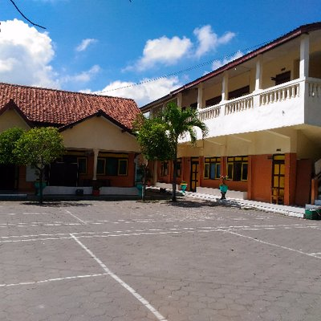
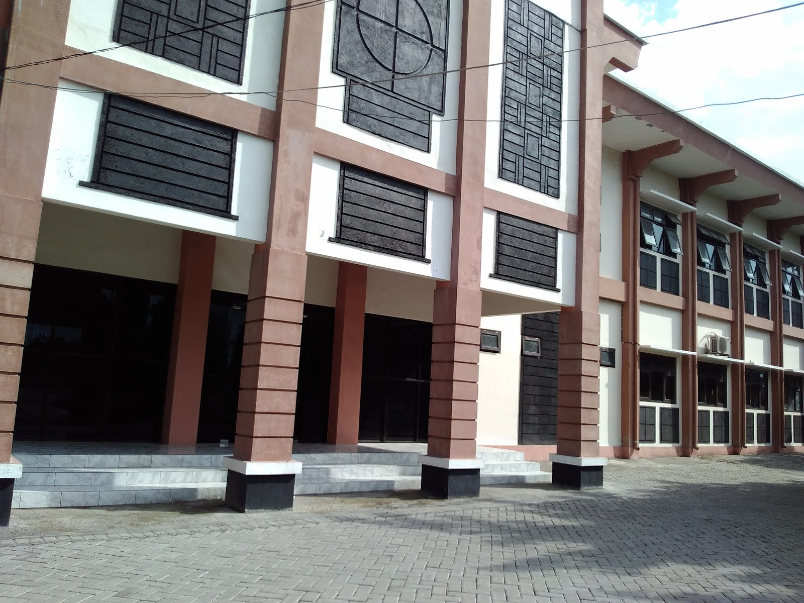

Aku Muhammad Nur Hikmah Ramadhan. Noefa sekalian bisa memanggilku Didan. Aku sekarang menempuh pendidikan di Universitas Sebelas Maret Surakarta. Keseharianku berada di Front Office UPT TIK UNS untuk menjalani kegiatan magang. Walaupun begitu, aku tidak mengambil magang selinier dengan jurusanku. Aku ada di Program Studi Informatika. Saat ini sedang terhimpun di fakultas baru, Fakultas Teknologi Informasi dan Sains Data.
Aku lahir di Bojonegoro. Namun, aku besar dan kecil di Delanggu. Walaupun mungkin jarang orang tahu, namun kota kecil ini pernah mencetak swasembada pangan kala itu. Aku tinggal bersama keluarga kecil, dengan seorang saudara yang kupunya dan kedua orang tua. Meskipun demikian, aku tinggal di Mojosongo, Surakarta untuk berkuliah. Aku tidak berada di Mojosongo kota, namun masih dalam lingkup kawasan UNS.
Career
Riwayat pendidikanku masa kecil sudah tidak tersisa wujud fisik tempat aku sekolah. Di antaranya :
PG Aisyah Bojonegoro
TK Permata Hati Bojonegoro
TK Taruna Teladan Delanggu
Selanjut dan seterusnya aku melanjutkan pendidikanku di :
SD Negeri 1 Delanggu

SMP Negeri 1 Delanggu
SMA Negeri 1 Kartasura

Setelah itu, aku dinyatakan lulus pendidikan wajib. Kemudian aku juga lolos test seleksi PTN melalui SBMPTN.
.png)
.jpg)